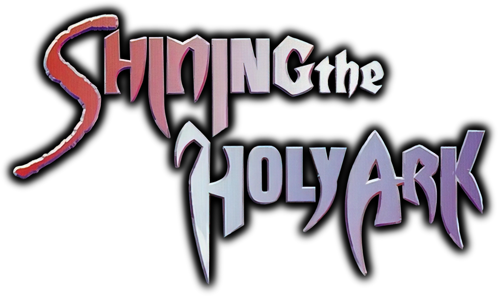
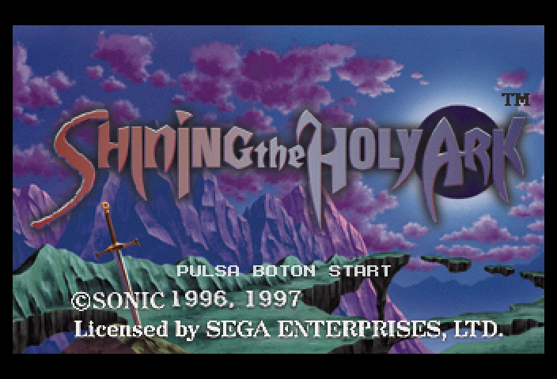
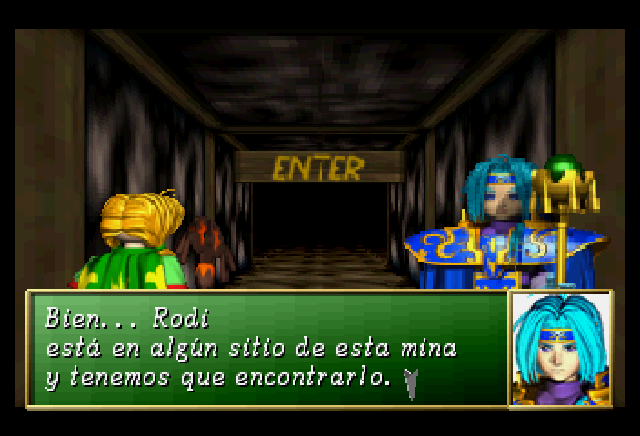
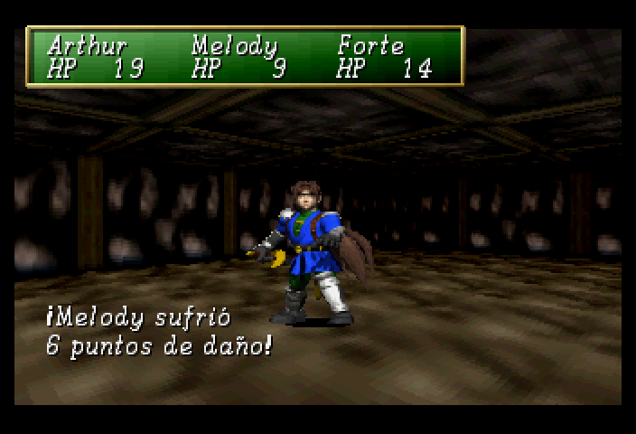
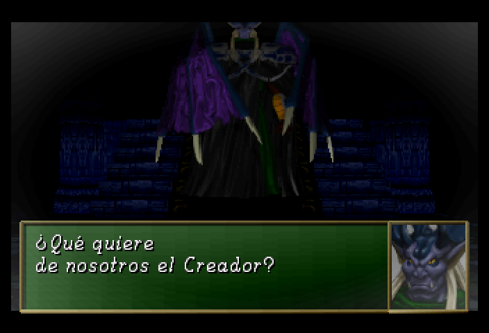

Sega Saturn · Sega / Sonic! Software Planning · 1997

TRADUCCIÓN AL ESPAÑOL
Proyecto de traducción fan por Fveralv. Progreso y descarga del parche.
Captura 1
img/captura1.png
Captura 2
img/captura2.png
Captura 3
img/captura3.png
Captura 4
img/captura4.png
Estado
Fase
Pruebas
primera pasada completa
Parche
PPF
sobre la versión USA
⚠ En fase de pruebas. La traducción aún no se ha jugado de principio a fin. Puede haber textos que no quepan en su ventana, concordancias raras o errores que afecten a la partida.
Progreso general del proyecto
Por secciones
| Sección | Estado |
|---|---|
| Diálogos e historia | Completo |
| Tiendas, iglesias, posadas y herrero | Completo |
| Menús, estado y guardado | Completo |
| Objetos, armas, magias y descripciones | Completo |
| Monstruos y mensajes de combate | Completo |
| Fuente con tildes, ñ, ¿ y ¡ | Completo |
| Pruebas completas en juego | En curso |
| Revisión de estilo | En curso |
| Textos del sistema (configuración, título) | Completo |
| Gráficos con texto (logotipos) | Pendiente |
Descarga
⬇ Descargar parche
Repositorio
El parche solo contiene las diferencias con el disco original. No incluye el juego: necesitas tu propia copia legal.
Cómo aplicarlo
- Ten tu imagen del disco original de Shining the Holy Ark (USA) en formato
.bin/.cuede 2 pistas, sin modificar. - Haz una copia de seguridad de
Shining the Holy Ark (USA) (Track 1).bin. - Aplica el
.ppfsobre esa copia con un aplicador de PPF 3.0 (por ejemplo PPF-O-Matic).
Comprueba antes que tu pista 1 es la correcta:
| Tamaño | 257.661.600 bytes |
| MD5 | 06FEA2FFC7F67B4547606889DB515504 |
| SHA-1 | F55FD6CBEA76DBF62A4D973200FA62FC49105936 |
Notas de traducción
- Los nombres de los personajes se mantienen como en la versión inglesa: Arthur, Forte, Melody, Rodi, Lisa, Basso, Akane, Doyle...
- Si encuentras un texto cortado, que se sale de la ventana o un símbolo raro, abre una incidencia indicando dónde estabas y la frase exacta.